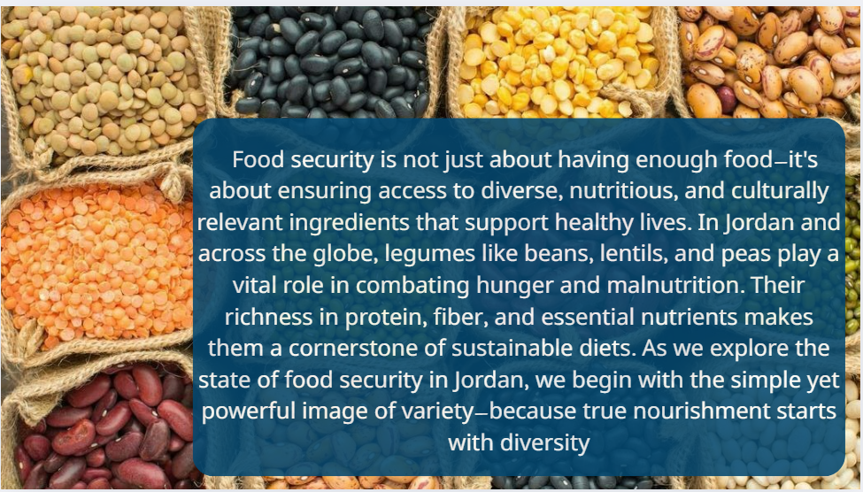

About Food Security
Food security means ensuring consistent access to diverse, nutritious, and culturally relevant food. In Jordan, this requires balancing sustainability, innovation, and equity.

Journey of a Lentil
Beneath the sun-drenched soil of the Jordan Valley, a lentil grows resiliently. From field to basket, it represents sustainability, access, and care.
Key Challenges in Jordan
- Water scarcity
- High dependency on imports
- Climate change & soil degradation
- Urban expansion
- Need for better technologies
Types of Agriculture
- Rain-fed farming
- Irrigated farming
- Greenhouses & vertical farming
Agricultural Statistics in Jordan
Learn the key figures that shape Jordan's agricultural landscape—from land area to economic output.
Read MoreIrrigation Systems
Drip irrigation, surface irrigation, and treated wastewater maximize efficiency in Jordan.
Read MoreAvailable or Rare Crops
Common: tomatoes, olives, citrus. Rare: quinoa, medicinal herbs.
Read MoreAvailable or Rare Plants
Jordan hosts native plants like black iris and desert fig, with conservation for endangered species.
Read MoreVertical Farming
Urban initiatives like iPlant and Ivvest support sustainable food production in small spaces.
Read MorePlant Diseases
Common: tomato speck & crown gall. AI tools help detect and manage crop health.
Read More